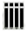

Modelo: TT-IN
Modelo: TT-INTanque exterior: Inoxidable 202 8k
(pulido espejo)
• 15-(165L) / 20-(220L) / 30-(320L)
• 5 tubos por usuario recomendado
 Presión en entrada de agua fría:
Presión en entrada de agua fría:(sin tanquecito de prellenado)
• Hasta 0,2 kg/cm2
| MODELO | TUBOS | CAPACIDAD |
|---|---|---|
| TT-IN-15 | 15 | 165 |
| TT-IN-20 | 20 | 220 |
| TT-IN-30 | 30 | 320 |
| Informacion General |
|---|
| Modelo: TT-IN |
| Tipo: Termosifónico |
| Tanque interior: Inoxidable 304 2B Tanque exterior: Inoxidable 202 8k (pulido espejo) |
|  Tubos y Capacidades(L): • 15-(165L) / 20-(220L) / 30-(320L) |
| Estimación de usuarios: • 5 tubos por usuario recomendado |
| Presión en entrada de agua fría: (sin tanquecito de prellenado) • Hasta 0,2 kg/cm2 |